Lake Como, Italy
I finally made it to Italy’s deepest lake, home to spectacular villas, colorful hamlets and scenic gardens. And now I’m smitten. Lake Como truly is a summer dream destination, and I’m sharing my complete travel guide to help you plan your visit. Below you’ll find my favorite villages, villas, the best Lake Como hotels, Airbnbs, restaurants, swimming spots, viewpoints and more.
How many days on Lake Como?
FOUR TO FIVE DAYS. Lake Como is one of the most serene destinations in Italy, and you’ll want to explore at a relaxed pace to really enjoy the surroundings and soak in the ambiance. There are several towns, hamlets and villages to visit, but all are tiny and it’s possible to see multiple destinations in a single day. Four to five days is the ideal amount of time to explore both well known and lesser known villages, enjoy a boat day, visit the a few villas and eat at the best restaurants.
When to visit Lake Como?
MAY TO SEPTEMBER. May through September is high season. Prices for lodging are high, but this is the warmest time of the year, and the most pleasant time to visit. Oddly enough, May and June also get the most rainfall. There’s a lower chance of rain in July, August or September, but Lake Como will be busier at this time. If you want to see the purple wisteria around Lake Como, visit in April when the flowering plant is in full bloom.


Towns of Lake Como
BELLAGIO
Bellagio might be the most iconic destination on Lake Como. The picturesque village is home to scenic cobbled lanes and stairways lined with charming boutiques, gelato shops, cafes and restaurants – Salita Serbelloni is the most famous passageway. Bellagio is small enough to visit as a day trip, but its location between the lake’s two branches make it the ideal home base for exploring the surrounding region.
COMO
Como is the largest settlement on Lake Como, the city where most visitors arrive by train. It’s perfectly lovely, and has the most options in terms of lodging, food and shopping, but its location on the southern tip of the lake isn’t the most ideal location for exploring the region.
LENNO
A lovely little village that takes a mere hour to explore after a visit to Villa del Balbianello. The main square is home to the octagonal shaped Church of St. John and Baptisery of St. Stefano and a delicious gelateria.
MENNAGIO
Mennagio is one of the most scenic settlements to approach by water. Colorful old buildings cluster around the waterfront where the white bell tower of St. Stephen’s Church rises up out of the rooftops.
VARENNA
Varenna is my favorite destination on Lake Como. The little village sits on the eastern shore where you’ll find some of the loveliest viewpoints on the lake. A colorful façade of yellow, orange and red buildings paint an incredible scene for visitors approaching by boat in search of postcard perfect views. Varenna is also home to two of the prettiest villas on Lake Como – Villa Monastero and Villa Cipressi.

 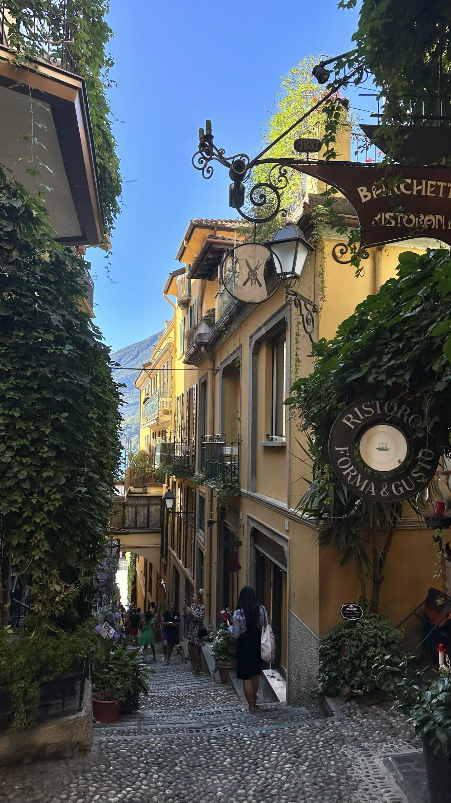
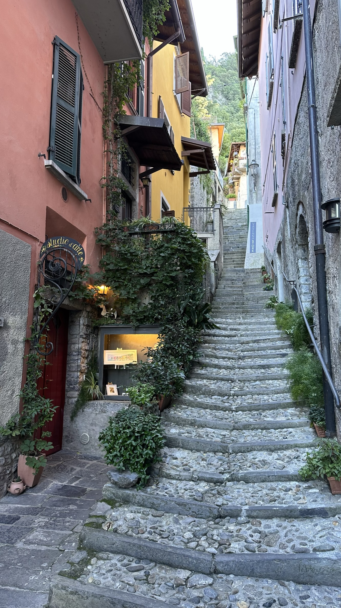
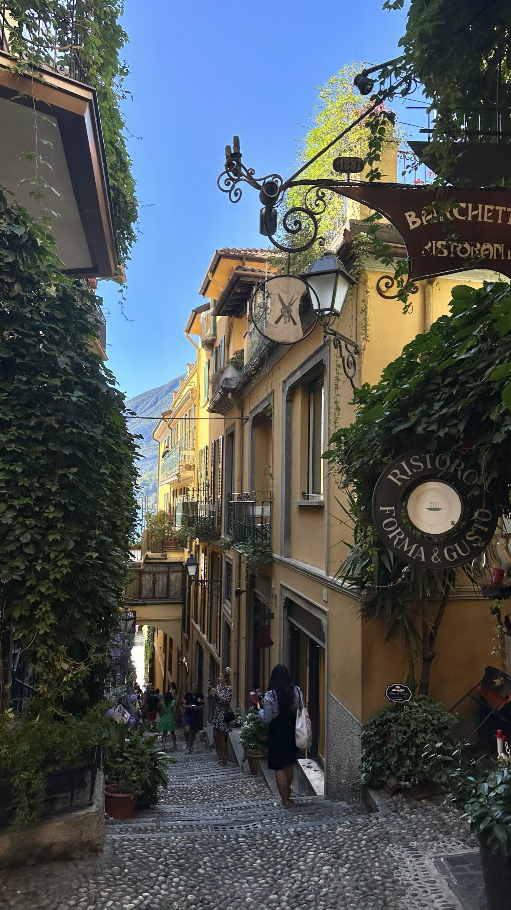
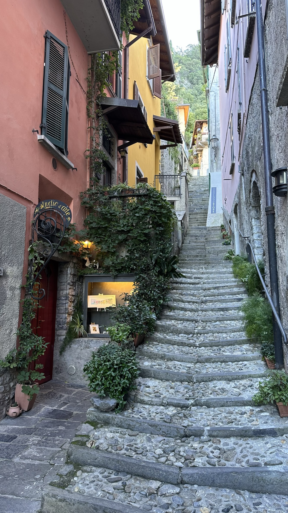
Villas on Lake Como
VILLA DEL BALBIANELLO (LENNO)
Villa del Balbianello sits on the outskirts of Lenno. When you exit the ferry, walk to your left following the water until you see the sign for the villa. At the sign there are two options to reach the villa: pay a few Euro to join a water taxi (five minutes) or a free walk through the park (15 minutes). I opted for the walk, not realizing how stunning the villa is to approach by water until I did the return by water taxi. I highly recommend using this service both directions.
VILLA MELZI (BELLAGIO)
This is a 19th century neo-classical villa located in Bellagio. It isn’t nearly as popular as the villas in Lenno, Tremezzo or Varenna, but worth a quick visit to see the gardens and lake views while in Bellagio.
VILLA MONASTERO (VARENNA)
This expansive handsome villa is the neighbor to Villa Cipressi on Lake Como’s eastern shoreline. Villa Monastero sits perched over a terraced garden bursting with plants, trees and flowerbeds including agaves, palms, wisteria, magnolia, citrus, roses and more. One of the prettiest private boat docks sits in front of the villa – stone columns rise up from a set of stone steps that lead down to the water.
VILLA CIPRESSI (VARENNA)
A functioning hotel set in a 17th century villa overlooking a beautiful botanical garden that can be visited by outside guests. Pathways wind their way through the terraced garden where lush greenery spills down into the lake. Don’t miss the grand cast-iron gate that opens up to a set of stone steps that lead into the water (this is the villa’s private boat jetty). Villa Cipressi is prettiest in April when the purple wisteria is in full bloom.
VILLA CARLOTTA (TREMEZZO)
Villa Carlotta is located on the banks of Tremezzo, just steps away from the ferry jetty. The villa now serves as a museum, and ticketed entry includes access to both the museum and the botanical gardens.

 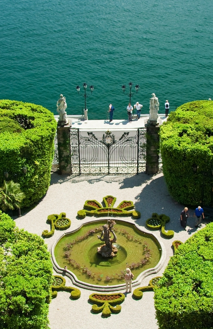
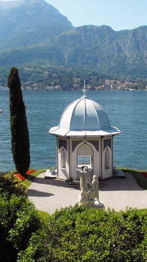
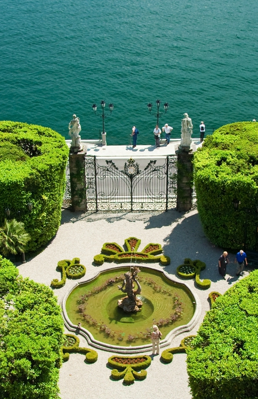
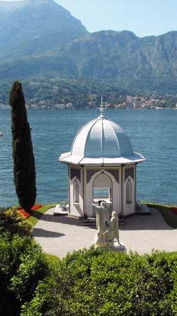
Where to stay?
DIVINA VITA APARTMENTS (VARENNA)
Divina Vita offers guests one of the loveliest views in Varenna. The apartments open up to small balconies with decorative metal railing that overlook Lake Como (the Deluxe Apartment has a particularly lovely view). There are only five apartments, and they book up months in advance.
GRAND HOTEL TREMEZZO (TREMEZZO)
This might be the most quintessential hotel stay on Lake Como. Grand Hotel Tremezzo towers over the western banks of the lake facing Bellagio across the water. It’s completely reminiscent of vintage Italy, and looks straight out of a Wes Anderson film. The hotel’s lakefront is an absolute vibe adorned with bright orange and white sun beds, umbrellas, chairs and tables. There is a pool on the lake, and the hotel is conveniently located next to Villa Carlotta and the Tremezzo ferry jetty.
MANDARIN ORIENTAL, LAGO DI COMO (BLEVIO)
If you’re looking to splurge on Lake Como, Mandarin Oriental is the place to do it. Set in a 19th century villa, the five-star property offers guests a selection of rooms, suites and villas. Beautiful property, and impeccable service.
HOTEL BELVEDERE (BELLAGIO)
Hotel Belvedere sits perched on the hill above Bellagio where beautiful gardens, an infinity pool and umbrellas slope down the property’s rolling hills. The design is classic Italian, and the property grounds + views are the main draw to staying here. Rooms are clean, albeit a bit dated. It’s a 10-minute walk to reach the Bellagio town centre.

 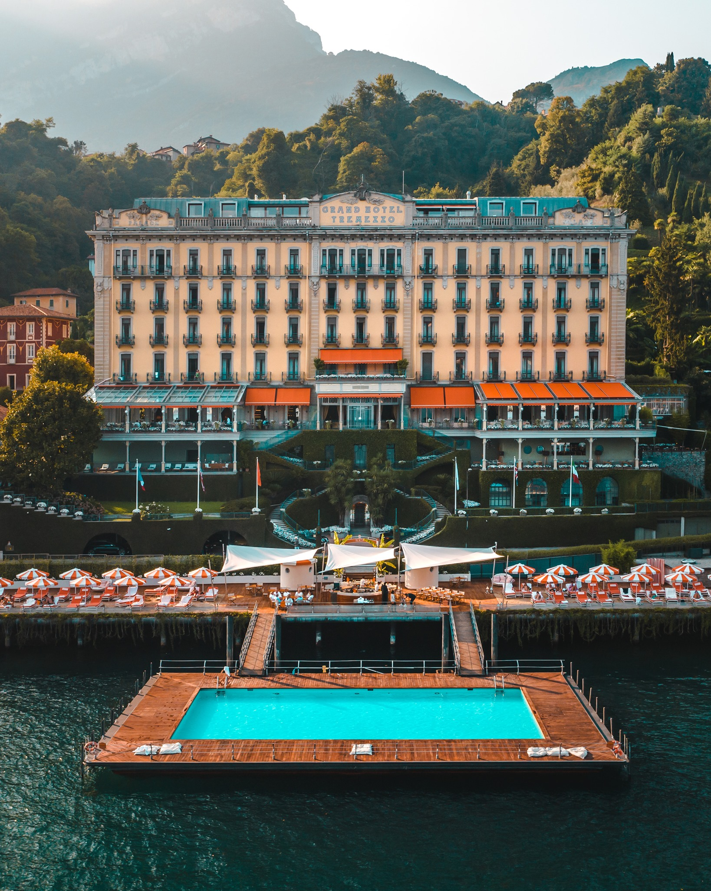
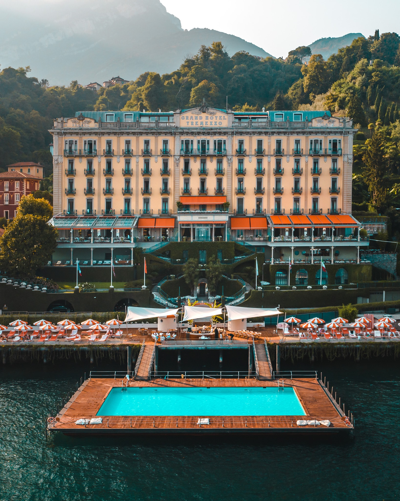
Where to eat?
AL PRATO (VARENNA)
Al Prato might be the best restaurant in Varenna. The menu is always changing, but usually includes fresh pastas, seafood and meat. Reservations recommended – the restaurant is tiny!
BAR II MOLO (VARENNA)
Absolutely charming bar / cafe on the Varenna waterfront that faces picturesque views of the village and a little beach. This place is very popular during high season, expect a long wait for a table.
BISTROT ANTICHI SAPORI (BELLAGIO)
Casual restaurant in Bellagio that offers a nice variety of Italian dishes including bruschetta, pastas, pizza, meat and fish.
GIACOMO AL LAGO (TREMEZZO)
My favorite restaurant on Lake Como is lakefront at Grand Hotel Tremezzo. The outdoor restaurant bursts with retro Italy vibes, surrounded by sun beds, umbrellas, tabletops and chairs dripping in the property’s signature orange + white color palette. Seafood is the restaurant’s specialty – highlights include linguine with lobster and cherry tomato sauce, spaghetti with clams, fresh sea bream, gnocchi with langoustines and more.
TRATTORIA SAN GIACOMO (BELLAGIO)
This little restaurant sits at the top of the steps on Salita Serbelloni, the most photographed location in all of Lake Como. If you can get one of their tables outside, the ambiance is a 10/10.

 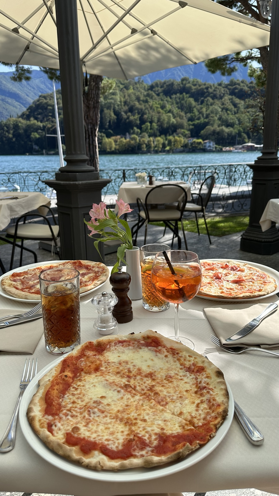
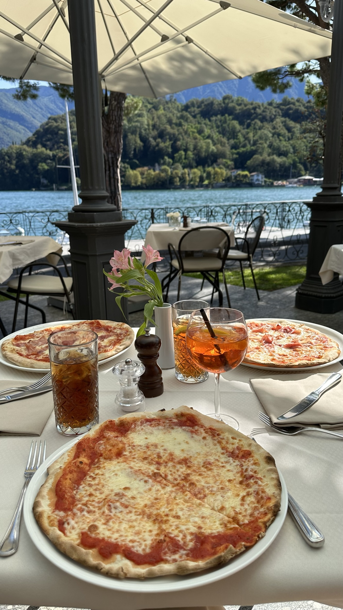
More from LAKE COMO ...

 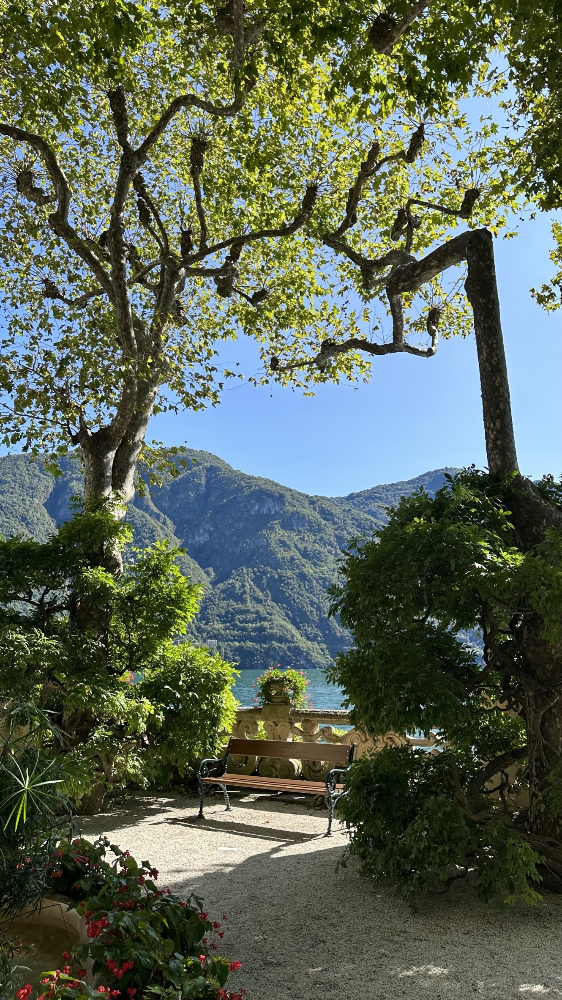
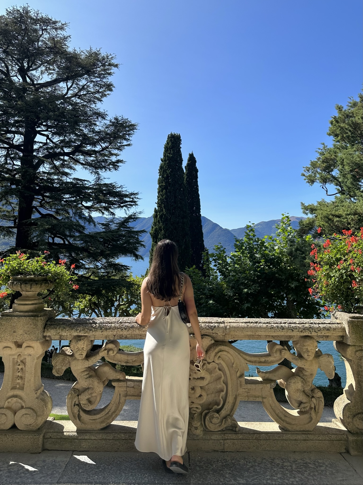
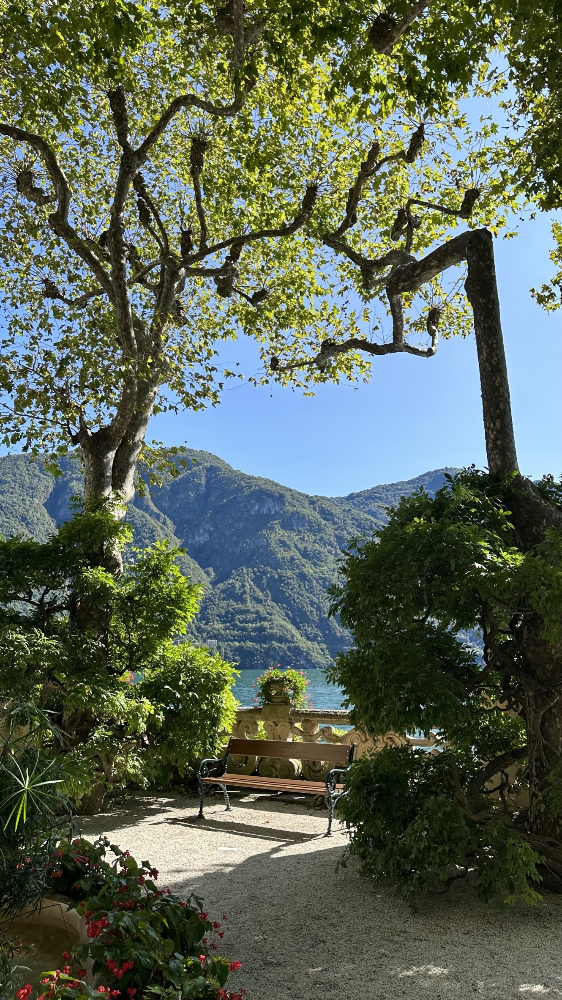
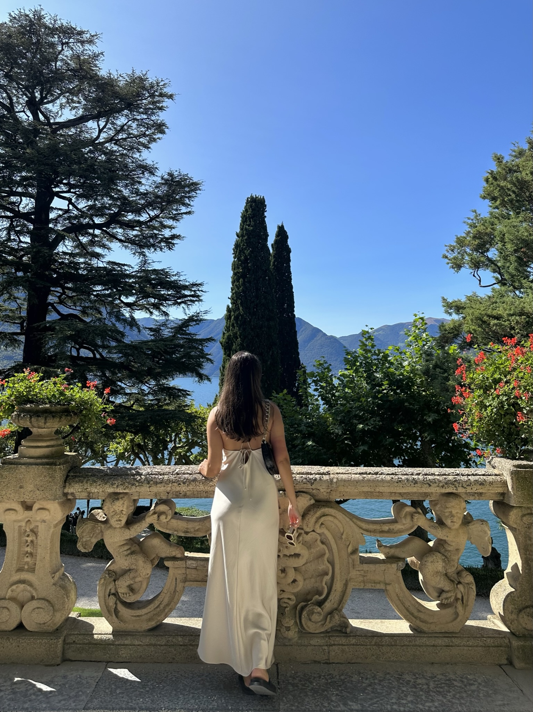

 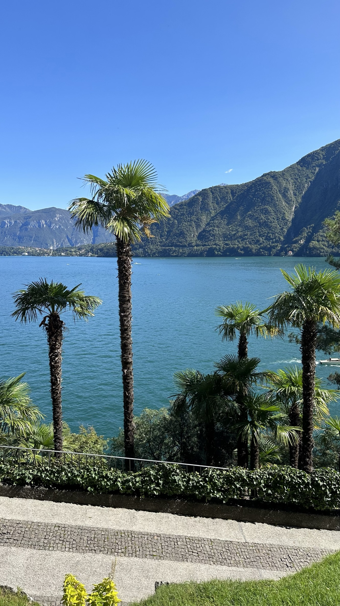
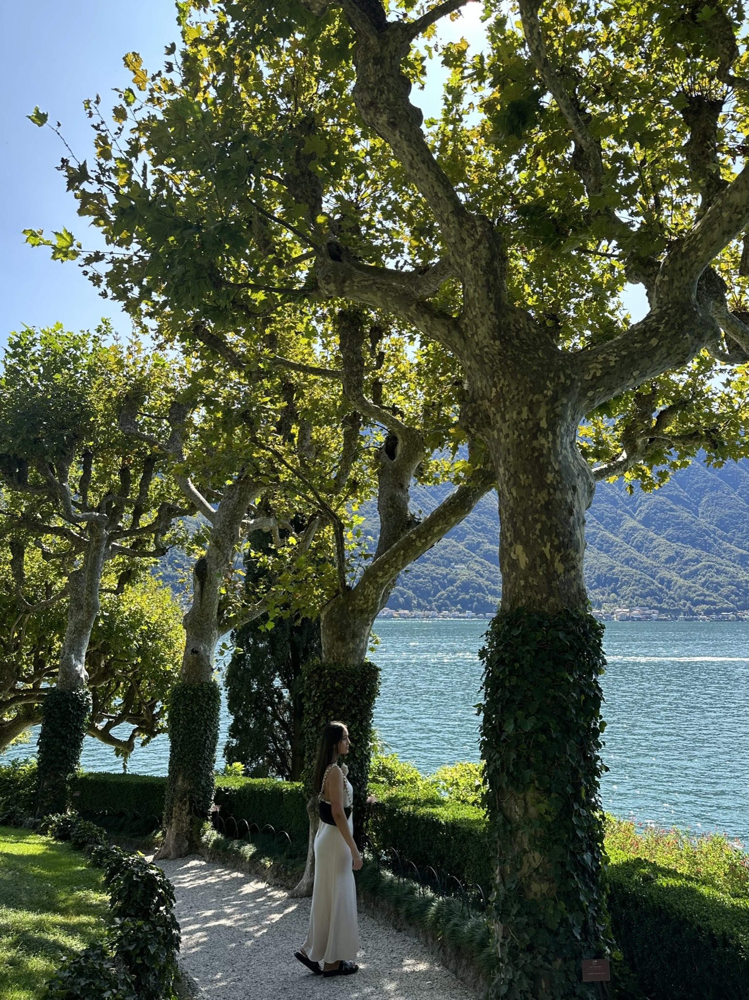
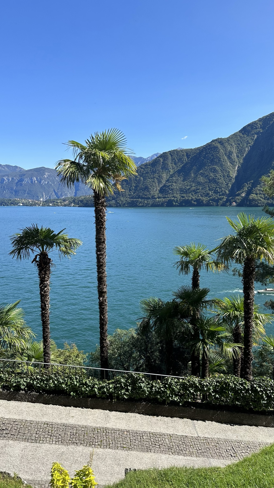
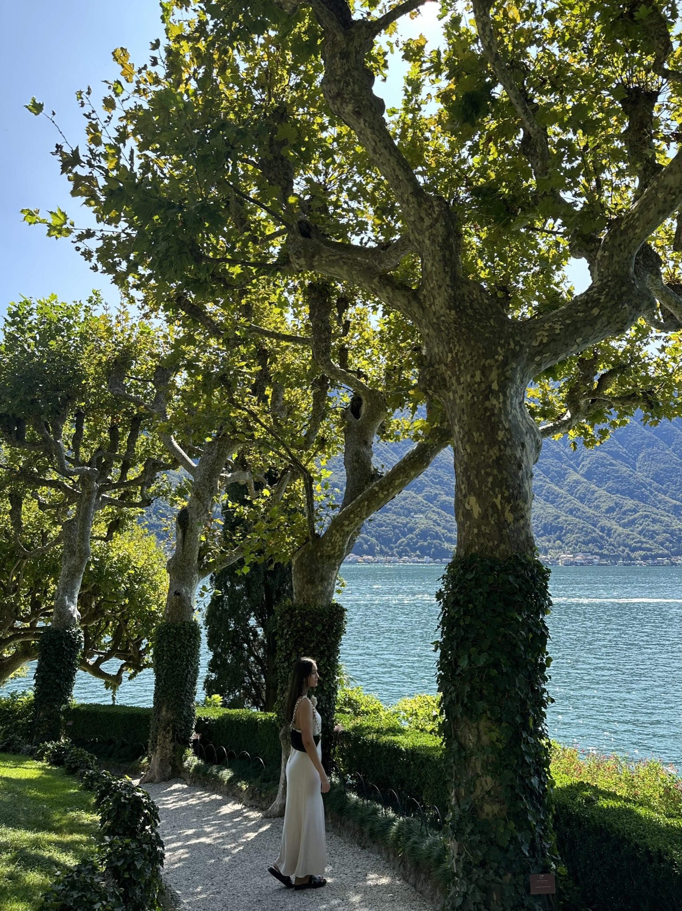